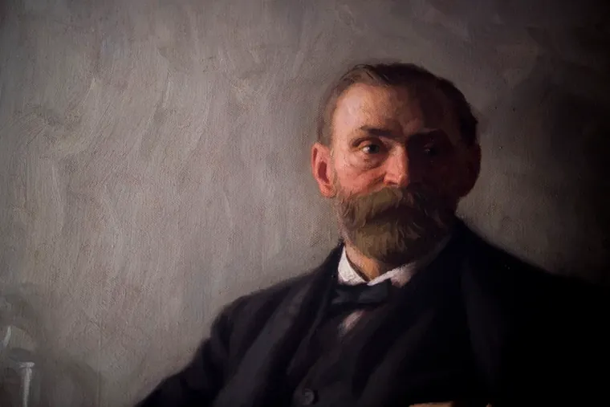
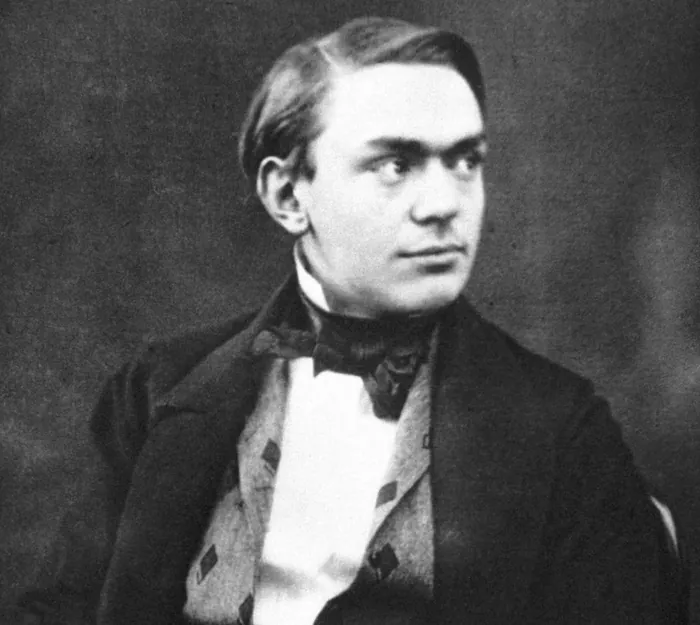
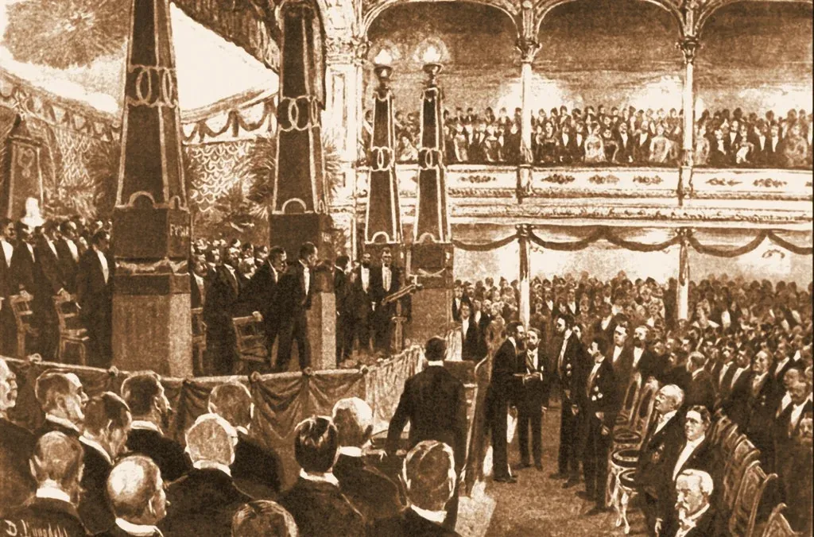
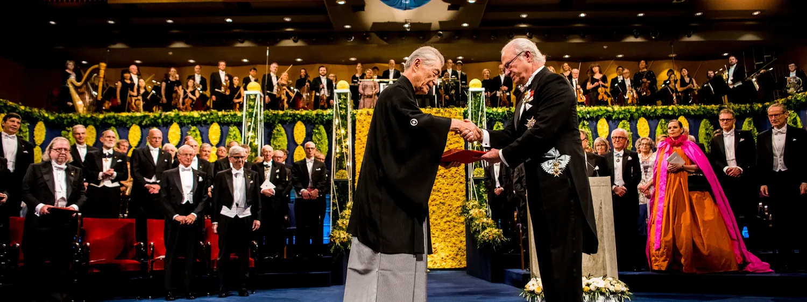
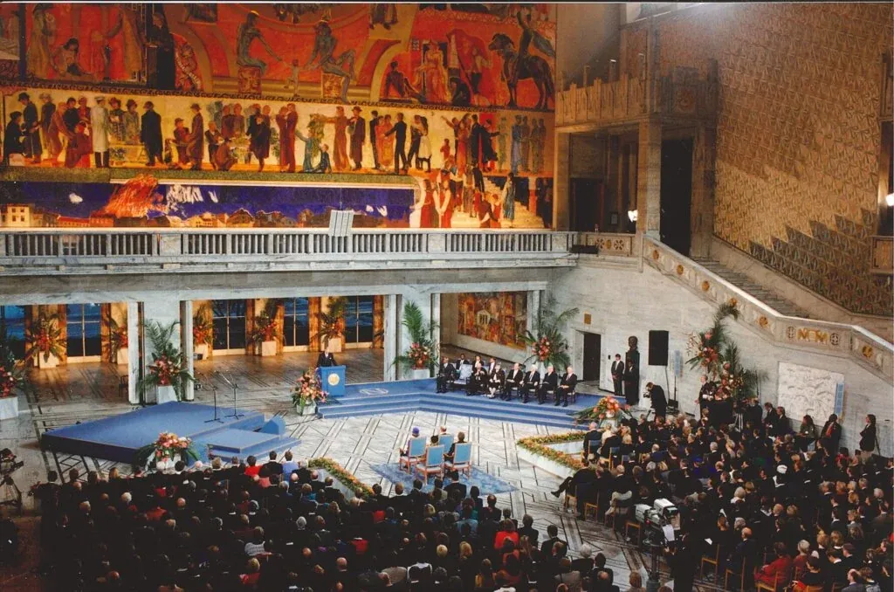

00 · The short answer先给答案：为什么一百多年了还发得出奖金
这个问题有一个不神秘的答案：诺贝尔在遗嘱里把「本金」和「每年能发出去的钱」分开了， 然后基金会花了大约九十年，把三件事逐个解决——税、投资限制、以及花钱的纪律。今天它的规则写得很清楚： 长期做到通胀后年化 3% 以上的回报，每年花掉的钱只占本金约 2%。
五个条件，缺一条都撑不到今天
诺贝尔写的是：本金构成一笔「基金」，每年发出去的是这笔基金的利息——不是本金。官方基金会的目标写得也很直白：长期要有足够高的回报，用来维持诺贝尔奖的财务基础、并保证评奖委员会独立工作。
基金会 1904 年第一次尝试免税，议会没通过。1925 年，全部颁奖机构决定当年不发奖——这被看作抗议，反而赢得同情。1927 年后税负从 40% 降到 3%；1938 年只有 5%，二战后升到 21%；1946 年，基金会拿到免税地位（理由是它应当被视作一个「学会」）。
遗嘱里的「安全的证券」在 1901 年被理解成国债、房产抵押贷款和公司债——本金因此缩了几十年。1939 年允许买房产；1950 年代初政府放行，董事会「实际上被给了自由的手」去买大部分类型的股票。1980 年代本金二十年翻了四倍；1991 年，本金的实际价值回到 1901 年的水平。
基金会给自己定的目标是扣除通胀后年化至少 3%的长期回报，并认为只要达到这个水平，就能覆盖未来的支出。战略基准是 55% 股票 / 10% 债券 / 10% 房产 / 25% 另类资产；董事会定区间，投资委员会（不领报酬）做战术配置与选管理人。
2025 年，基金会全部支出（奖金 + 评奖委员会报酬 + 诺贝尔周 + 行政）共 1.481 亿克朗，而年末投资资本是 67.44 亿克朗——两个数相除，支出约等于本金的 2.2%（本页据年报数字计算）。只要长期回报稳住 3% 以上，奖金就能一直发下去。
结果是：1901 年诺贝尔的本金是 31 587 202 克朗；按 2025 年 12 月的币值折算， 2025 年末基金会手里的本金是 6 743 994 000 克朗，相当于 1901 年的 297%—— 而官方统计（1901–2026）里，它已经颁奖 638 次，共有 1 034 位获奖者或组织。 Official index, prize-amounts-2025.pdf: invested capital 297% of the 1901 level, in 2025 money.
先说清口径，后面所有数字都照这个口径
本页所有数字来自 nobelprize.org 官方页面与《诺贝尔基金会 2025 年报》PDF；引文一律保留英文原文， 中文是转述。凡是官方没有的数字（例如某机构有多少位院士），本页宁可留白，不补也不猜。
「实际价值」「实际购买力」= 按 2025 年 12 月币值折算后的数字，这是官方奖金表 PDF 自己的口径。
01 · Alfred Nobel诺贝尔其人：发明家、企业家，也是写诗的人
官方对他的介绍是「发明家、企业家、科学家、商人，还写诗和戏剧」。 他一生有 355 项专利，最出名的是炸药；而今天全世界记住他的，是他把财产变成了奖金这件事。




From bankruptcy to dynamite从破产的家庭，到 14 个国家的炸药厂
诺贝尔出生那年，父亲伊曼纽尔就破产了。后来父亲在圣彼得堡开工厂、拿到俄军订单，家道重新起来—— 他是在圣彼得堡那种「世界主义的气氛」里受教育、长大成人的。17 岁他已经能流利地说五种语言， 去巴黎在化学家 T. Jules Pelouze 的实验室工作了一年。
真正的转折来自两场爆炸。1864 年，弟弟埃米尔在斯德哥尔摩制备硝化甘油时被炸死； 1866 年，他自己的克吕梅尔工厂又被炸毁。他没有停下，而是跑到易北河上的木筏上继续试，最后发现 硅藻土能让硝化甘油稳定下来——他把这种混合物命名为 dynamite（希腊语 dynamis，意思是「力量」）。 官方说，基于他的工作与专利，十年之内有 16 家炸药厂在 14 个国家建起来。这就是后来那笔遗产的来源。
他 40 岁已是富人，搬进巴黎 Avenue Malakoff；1891 年因为无烟火药 ballistite 与法国政府闹翻， 迁居意大利圣雷莫。他终身未婚、没有自己的家庭；1876 年他登报招聘管家兼私人秘书，雇了奥地利人 贝尔塔·冯·苏特纳——她后来成为和平运动的领袖，也是诺贝尔奖的得主。1896 年 12 月 10 日， 他在圣雷莫的家中去世，63 岁。他有 1 500 多册私人藏书，写过诗；他留下的一句话是： “Home is where I work and I work everywhere.”（家就是我工作的地方，而我在哪里都能工作。）
Key events官方年表里，与「这笔钱从哪来」直接相关的节点
- 1833
出生于斯德哥尔摩。同年父亲伊曼纽尔（Immanuel Nobel）破产。
Alfred Nobel is born in Stockholm, Sweden. In the same year, his father, Immanuel Nobel, goes bankrupt.
- 1850–52
17 岁已能流利使用五种语言。赴巴黎，在 T. Jules Pelouze 的实验室工作一年；又游历意大利、德国与美国。
At the age of 17, Alfred Nobel speaks five languages fluently. He travels to Paris and works for one year in the laboratory of T. Jules Pelouze.
- 1864
取得硝化甘油（爆炸油）第一项专利，创办 Nitroglycerin AB。同年，弟弟埃米尔（Emil）在斯德哥尔摩 Heleneborg 制备硝化甘油时被炸死。
Emil, Alfred Nobel’s brother, is killed during the preparation of nitroglycerin at Heleneborg, Stockholm.
- 1866
克吕梅尔（Krümmel）工厂爆炸。他在易北河上的木筏上继续试验，发现硅藻土能让硝化甘油稳定下来，把这种混合物命名为 dynamite（希腊语 dynamis，意为「力量」）。
He finds that nitroglycerin is stabilised by the addition of kieselguhr (a siliceous deposit; also known as diatomaceous earth) and calls this mixture dynamite. (From Greek dynamis meaning “power”).
- 1873
40 岁，已是富人。迁居巴黎，住进 Avenue Malakoff。
At the age of 40 Alfred Nobel is a wealthy man. He moves to Paris and settles at Avenue Malakoff.
- 1876
登报招聘管家兼私人秘书，雇了奥地利人贝尔塔·冯·苏特纳（Bertha Kinsky von Chinic und Tettau，后姓 von Suttner）。她工作不久即离开，后来成为和平运动领袖——也是后来的诺贝尔奖得主。
Alfred Nobel advertises for a housekeeper/personal secretary, meets with Bertha Kinsky von Chinic und Tettau (later von Suttner) and hires her. She leaves her employment after a short time and becomes a leading peace activist.
- 1891
因无烟火药 ballistite 与法国政府发生争执，离开巴黎，定居意大利圣雷莫。
Alfred Nobel leaves Paris and settles in Sanremo, Italy, after a dispute with the French government over ballistite.
- 1893
聘用年轻工程师拉格纳·索尔曼（Ragnar Sohlman）——他后来成为遗嘱执行人。
Alfred Nobel hires the young engineer Ragnar Sohlman, who he later names executor of his will and testament.
- 1894
买下瑞典卡尔斯库加（Karlskoga）的博福斯（Bofors-Gullspång）机械厂与 Björkborn 庄园。
Alfred Nobel buys a small machine works (Bofors-Gullspång) and a manor (Björkborn) at Karlskoga, Sweden.
- 1895
第三份、也是最后一份遗嘱在巴黎的瑞典-挪威俱乐部签署。
The third and final will of Alfred Nobel is signed at the Swedish-Norwegian Club in Paris.
- 1896
12 月 10 日在圣雷莫的家中去世，63 岁。
Alfred Nobel dies, at the age of 63, in his home in Sanremo, Italy, on 10 December 1896.
- 1901
第一届诺贝尔奖于 12 月 10 日颁发——他去世五周年那天。
The first Nobel Prizes are awarded on 10 December.
为什么不写「他因为内疚炸药被用于战争才设奖」
这个说法流传很广，但官方页面并没有这样写。官方给出的动机是： 「诺贝尔有一个更好的世界的愿景。他相信人能够通过知识、科学与人文主义改善社会」。本页只写官方写了的。
02 · The will一份遗嘱：五年之后才落地
1895 年 11 月 27 日，巴黎的瑞典-挪威俱乐部，诺贝尔签下第三份、也是最后一份遗嘱。 最重要的那句话，是全部故事的起点：
“All of my remaining realisable assets are to be disbursed as follows: the capital, converted to safe securities by my executors, is to constitute a fund, the interest on which is to be distributed annually as prizes to those who, during the preceding year, have conferred the greatest benefit on humankind.”
我把剩余的全部可变现资产按如下方式处置：本金由我的执行人转换为安全的证券，构成一笔基金；基金的利息每年作为奖金，颁给前一年为人类带来最大贡献的人。
Alfred Nobel’s will, 27 November 1895 · 官方遗嘱页原文摘录
这句话里有两个关键词，决定了后来一百多年：capital（本金）与 interest（利息／收益）。 本金要「转换为安全的证券，构成一笔基金」——本金不是奖金，奖金只是它的收益。遗嘱还有一句常被引用的话：
“It is my express wish that when awarding the prizes, no consideration be given to nationality, but that the prize be awarded to the worthiest person, whether or not they are Scandinavian.”
我明确希望：评奖时不考虑国籍，奖要颁给最有价值的人，无论他是不是斯堪的纳维亚人。
遗嘱开启后的反应，官方用了「争议」两个字：家族反对设立诺贝尔奖， 而他指定的颁奖机构拒绝照他的要求办。诺贝尔指定了两名执行人，他们的任务是先谈判、再建一个组织。 于是，从签字到第一次颁奖，中间隔了整整五年。
- 1895-11-27
遗嘱签署
在巴黎瑞典-挪威俱乐部签下第三份、也是最后一份遗嘱，指定两名执行人。
官方历史页：Nobel died on 10 December 1896. His will was opened shortly after … He also appointed two executors of the will.
- 1896-12-10
诺贝尔去世
遗嘱开启后在瑞典与国际上引起很大争议——他把大部分财产留给了奖金。
When it was opened and read after his death, the will caused a lot of controversy both in Sweden and internationally.
- 1896–1900
家人反对、被指定者拒绝
家族反对设立诺贝尔奖；他指定的颁奖机构拒绝照办。执行人要与家族和各家机构谈判。
His family opposed the establishment of the Nobel Prize, and the prize awarders he named refused to do what he had requested in his will.
- 1900-06-29
诺贝尔基金会成立
官方组织页 Facts：Established 29 June 1900。距诺贝尔去世 4 年。
Established: 29 June 1900
- 1901-12-10
首个诺贝尔奖颁发
第一次颁奖每份奖金 15 万瑞典克朗。距遗嘱签署整整五年。
From 1901, when the first prizes (SEK 150,000 each) were awarded … ／ It was five years before the first Nobel Prize could be awarded in 1901.
遗嘱变章程：两条「不许停」的硬规则
遗嘱是个人意愿，要能执行，得变成章程里的条文。《诺贝尔基金会章程》§2 里有两条很关键：
- 每个奖至少每五年要颁一次（从基金会开始运作的次年起算）；
- 一次颁奖的金额，不得低于当年可用于颁奖的收益的 60%，且最多只能分给三个人—— 官方另一处也写明：「任何情况下，一份奖金不得分给超过三个人」。
这两条合起来的意思很直白：这份奖金不能停，也不能少发。基金会因此必须让本金长期赚得动。
03 · Who selects谁在颁奖：四家机构 + 一个委员会
诺贝尔没有把这件事交给一个「诺贝尔委员会」，而是指名了机构。官方原文一句话说清：
“In his last will and testament, Alfred Nobel specifically designated the institutions responsible for the prizes he wished to be established: The Royal Swedish Academy of Sciences for the Nobel Prize in Physics and Chemistry, Karolinska Institutet for the Nobel Prize in Physiology or Medicine, the Swedish Academy for the Nobel Prize in Literature, and a Committee of five persons to be elected by the Norwegian Parliament (Storting) for the Nobel Peace Prize.”
在最后一份遗嘱中，诺贝尔明确指定了负责他想要设立的各个奖项的机构： 物理学奖与化学奖由瑞典皇家科学院负责，生理学或医学奖由卡罗林斯卡学院负责， 文学奖由瑞典学院负责，和平奖则由挪威议会选出的一个五人委员会负责。
The prize-awarding institutions · nobelprize.org
| 奖项 | 颁发机构 | 来历 |
|---|---|---|
| 物理学Physics | 瑞典皇家科学院The Royal Swedish Academy of Sciences | 遗嘱指定 |
| 化学Chemistry | 瑞典皇家科学院The Royal Swedish Academy of Sciences | 遗嘱指定 |
| 生理学或医学Physiology or Medicine | 卡罗林斯卡学院的诺贝尔大会The Nobel Assembly at Karolinska Institutet | 遗嘱指定（Karolinska Institutet） |
| 文学Literature | 瑞典学院The Swedish Academy | 遗嘱指定 |
| 和平Peace | 挪威诺贝尔委员会（挪威议会选出的五人委员会）The Norwegian Nobel Committee | 遗嘱指定（a committee of five persons to be elected by the Norwegian Storting） |
| 经济学Economic Sciences | 瑞典皇家科学院The Royal Swedish Academy of Sciences | 1968 年由瑞典央行设立、1969 年首次颁发 |
经济科学奖是个例外：它不叫「诺贝尔奖」
1968 年，瑞典央行（Sveriges Riksbank）借着自己成立 300 周年，向诺贝尔基金会捐了一笔钱，设立了这个奖； 1969 年首次颁发给拉格纳·弗里施（Ragnar Frisch）与扬·丁伯根（Jan Tinbergen）。 官方对它的说明只有两句：奖金金额与诺贝尔奖相同，并且由央行支付。 它的全名里写的是「纪念阿尔弗雷德·诺贝尔」——Sveriges Riksbank Prize in Economic Sciences in Memory of Alfred Nobel；官方页面在称呼上也分得很清：前五个奖写 Nobel Prize in…，这一个只写这串全名。 评奖同样由瑞典皇家科学院负责。
How it is decided怎么选：委员会、50 年保密期与 12 月 10 日
章程 §6 规定：每个瑞典颁奖机构为每个奖项任命一个 3 到 5 人的诺贝尔委员会， 负责提出授奖意见；和平奖则由遗嘱里那个「挪威议会选出的委员会」（挪威诺贝尔委员会）裁定。 评选依据的材料，在奖项决定满 50 年之前不对外公开——这就是那些「谁被提名过」的名单要等半个世纪的原因。
颁奖的日子也是诺贝尔自己定下的：1901 年以来，颁奖礼都在 12 月 10 日举行，即诺贝尔逝世纪念日。 这一天得主会拿到三样东西：一张证书、一枚奖章，以及一份写明奖金金额的文件。 奖章用 18K 再生金手工制作；证书是独一无二的艺术品，由瑞典与挪威的艺术家与书法家制作。 物理、化学、医学、文学四枚奖章的正面相同（诺贝尔头像与「1833–1896」），背面随颁奖机构而变； 和平奖与经济科学奖的奖章也是诺贝尔头像，但设计略有不同。






04 · The Nobel Foundation诺贝尔基金会：管这笔钱的那个机构
诺贝尔去世四年后的 1900 年 6 月 29 日，诺贝尔基金会成立——官方称它是一个私人机构。 它有两个任务，一个关于钱，一个关于「无形的东西」。
“The Nobel Foundation, a private institution established in 1900, has ultimate responsibility for fulfilling the intentions in Alfred Nobel’s will. A central task of the Nobel Foundation is to manage Alfred Nobel’s fortune in a manner that ensures a secure financial standing for the Nobel Prize over the long term and to protect the common interests of the prize-awarding institutions appointed in the will, making certain they are guaranteed independence in their work of selecting Nobel Laureates.”
诺贝尔基金会是一个 1900 年成立的私人机构，最终负责实现阿尔弗雷德·诺贝尔遗嘱中的意愿。 它的核心任务是：以能保证诺贝尔奖长期财务稳健的方式管理诺贝尔的财产，并维护遗嘱中指定的各颁奖机构的共同利益， 确保它们在评选得主时独立——此外，它还负责通过一系列公共项目强化诺贝尔奖的地位。
The Nobel Foundation: tasks · nobelprize.org
Governance谁在管：董事会 7 席 + 2 副手，两年一届
| 规则 | 内容与官方原文 |
|---|---|
| 董事会 7 席 + 2 名副手 | 七名成员与两名副手，由各颁奖机构的受托人选举产生；须为瑞典或挪威公民。§ 13. The Foundation shall be represented by a Board of Directors, which has its registered office in Stockholm and consists of seven members and two deputies, Swedish or Norwegian citizens, who shall be elected by the trustees of the prize-awarding bodies. |
| 董事会内产生主席、副主席与执行董事 | 董事会从自己的成员中选出主席、副主席与执行董事（Executive Director）。The Board shall choose from among its own members a Chairman, a Vice-Chairman and an Executive Director. |
| 两年一届，5 月 1 日起算 | 董事与副手任期两年，从 5 月 1 日起算。The members of the Board and the deputies shall be appointed for a term of two years, counting from 1 May. |
| 6 名审计，其中 1 名由政府任命 | 每个日历年的董事会管理与账目，由六名审计审查；政府在新年前任命其中一名，并担任审计主席。§ 18. The administration of the Board and the accounts of the Foundation shall, for each calendar year, be examined by six auditors. Of these auditors the Government shall, before the beginning of the year, appoint one, who shall be the chairman of the auditors. |
| 颁奖委员会 3–5 人 | 每家瑞典颁奖机构为每个奖项任命一个由三、四或五人组成的诺贝尔委员会，提出授奖意见。§ 6. For each prize awarded by a Swedish prize-awarding body, the latter shall appoint a Nobel Committee consisting of three, four or five persons, to give their opinion on the matter of the award of the prize. |
| 评选材料 50 年内不公开 | 只有在该届奖项决定满 50 年之后，颁奖机构才可以（自行决定方式与范围）向第三方开放评选依据的材料。Such disclosure shall, however, not occur until at least 50 years have elapsed from the date of the relevant prize decision. |
两个任务的份量，是反过来的
官方历史页有一句话说得很妙：基金会成立时主要是为了投资诺贝尔的财产， 同时也管理诺贝尔奖的「无形价值」（immaterial value）；一百多年后，第一件事基本没变，第二件事却越来越重要—— 因为奖项积累起了声望。今天基金会名下还挂着诺贝尔奖官方站点（1995 年上线）、 诺贝尔奖博物馆（2001 年，斯德哥尔摩）、诺贝尔和平中心（2004 年，奥斯陆）等一整套公共业务； 斯德哥尔摩的诺贝尔中心（Nobel Center）计划在 2031 年开放。
基金会自己也有房产：斯德哥尔摩 Sturegatan 14，2025 年末的市场价值是 2.12 亿克朗—— 这处自有房产被单独计入本金，也是年报里「含自有房产」与「不含自有房产」两个数字的差别所在。
05 · The money钱：一百多年还在发，靠的是这五件事
把历史摊开看，基金会其实一直在做一件很窄的事：让本金跑赢它自己要发出去的钱。 中间失败了两次（互联网泡沫与 2008 年金融危机），赢了一场关键的仗（税），最后靠纪律站住。
诺贝尔写的是：本金构成一笔「基金」，每年发出去的是这笔基金的利息——不是本金。官方基金会的目标写得也很直白：长期要有足够高的回报，用来维持诺贝尔奖的财务基础、并保证评奖委员会独立工作。
the capital … is to constitute a fund, the interest on which is to be distributed annually as prizes
基金会 1904 年第一次尝试免税，议会没通过。1925 年，全部颁奖机构决定当年不发奖——这被看作抗议，反而赢得同情。1927 年后税负从 40% 降到 3%；1938 年只有 5%，二战后升到 21%；1946 年，基金会拿到免税地位（理由是它应当被视作一个「学会」）。
the parliament granted the foundation a tax cut from 40% to 3% … in 1946 the Nobel Foundation became tax exempt
遗嘱里的「安全的证券」在 1901 年被理解成国债、房产抵押贷款和公司债——本金因此缩了几十年。1939 年允许买房产；1950 年代初政府放行，董事会「实际上被给了自由的手」去买大部分类型的股票。1980 年代本金二十年翻了四倍；1991 年，本金的实际价值回到 1901 年的水平。
in the early 1950s the Swedish Government sanctioned changes, whereby the board for all practical purposes was given a free hand to invest … also in most types of stocks
基金会给自己定的目标是扣除通胀后年化至少 3%的长期回报，并认为只要达到这个水平，就能覆盖未来的支出。战略基准是 55% 股票 / 10% 债券 / 10% 房产 / 25% 另类资产；董事会定区间，投资委员会（不领报酬）做战术配置与选管理人。
The Foundation aims to deliver a total inflation-adjusted return of at least 3% annually.
2025 年，基金会全部支出（奖金 + 评奖委员会报酬 + 诺贝尔周 + 行政）共 1.481 亿克朗，而年末投资资本是 67.44 亿克朗——两个数相除，支出约等于本金的 2.2%（本页据年报数字计算）。只要长期回报稳住 3% 以上，奖金就能一直发下去。
the overall sum of all Nobel Prizes and operating expenses was SEK 148.1 million
- 1901
起点
本金 31,587,202 克朗（按 2025 年币值约 22.7 亿）。第一年每份奖金 15 万克朗。
官方奖金表 PDF：1901 年资本市值 31 587 202 SEK = 2 269 492 604 SEK（2025 年 12 月币值），指数 100%
- 1901–1930s
只准「安全证券」
国债、公司债、斯德哥尔摩房产、借给瑞典市政府；加上高额税负，本金几十年实际在缩水。
the first was the conservative investment strategy that followed from Nobel’s word “safe” in the will, which led to three kinds of investments: bonds in companies, real estate in Stockholm and lending money to Swedish municipalities
- 1925
一年不发奖
全部颁奖机构决定当年不颁奖，作为对税负的抗议；舆论站在基金会一边。
in 1925, a year when all the prize-awarding institutions decided to not award prizes. This was seen as a protest and was not criticised.
- 1946
免税
议会通过免税，理由是基金会应被视作一个「学会」。税负不再吞掉收益。
in 1946 the Nobel Foundation became tax exempt
- 1950s 初
允许买股票
政府放行，董事会在此后可以投大部分类型的股票——本金开始能长大。
in the early 1950s the Swedish Government sanctioned changes … also in most types of stocks
- 1980s
二十年翻四倍
真正的增长从 1980 年代开始，二十年间本金的规模翻了四倍。
they did not really start to grow until the 1980s. At that time, however, they grew fast, eventually quadrupling over a 20-year period.
- 1991
回到原点
本金的实际价值回到 1901 年的水平——用了 90 年。同年奖金实际购买力也恢复到 1901 年的 101%。
In 1991, the funds were back to their original size … The real value of the prize amount in SEK terms was finally restored in 1991.
- 1990s–2000
涨得最快，也跌得最狠
1990 年代规则再放宽，最多 70% 本金可以投股票。互联网泡沫破裂时，市值从接近 50 亿掉到略高于 30 亿——损失近 30%。
up to 70% of the capital was invested in shares. This contributed to the decrease during the dot com-crash around 2000, when the value went from almost 5 billion to little more than 3 billion SEK – a loss of almost 30%.
- 2008–2009
又一次重创
金融危机中基金会再次承受重大损失。2010 年代起转为均衡配置：股票约 40%、债券 20%、其他（主要是对冲基金）40%。
then the foundation sustained heavy losses during the crisis in 2008–2009. In the 2010s, the foundation has worked to stabilise its investments, through balancing different assets.
- 2025
只涨 0.9% 的一年
全年回报 +0.9%（基准 +4.6%）——克朗大幅升值拖掉约 6 个百分点，行情又由少数美国大盘股驱动。但五年平均年化仍有 +7.7%。
The total return was +0.9 percent, compared to +4.6 percent for the benchmark index … The investment capital has over the past five years increased by an average of +7.7 percent annually.
2025 annual report2025 年这一年：赚了多少，花了多少
Where the money goes花在哪：奖金只占三分之一多一点
| 项目 | 金额 |
|---|---|
| 奖金（全部奖项合计）the prizes | 55.0 百万 |
| 评奖委员会报酬compensation to the Prize Committees | 36.8 百万 |
| 斯德哥尔摩与奥斯陆的诺贝尔周the Nobel Week in Stockholm and Oslo | 34.4 百万 |
| 行政等administration etc. | 21.9 百万 |
也就是说：2025 年六个奖的奖金合计 5 500 万克朗，而评奖委员会报酬、诺贝尔周、行政三项 加起来 9 310 万——发奖金这件事的「配套成本」，比奖金本身还高。
How it is invested钱放在哪：2025 年末的资产暴露
投资资本暴露（2025 年末，官方年报）
括号里是 2024 年的数字：56（56）股票基金 · 8（9）房产与基建 · 13（12）固收与现金 · 22（24）另类 · 1（−1）汇率对冲累计。
这些实际数字背后，是董事会定下的战略基准组合：
| 资产 | 基准权重 | 对应指数 |
|---|---|---|
| 股票 | 55% | 44% MSCI All Country World Index + 11% SIX RX（均含股息） |
| 债券 | 10% | Handelsbanken All Bond Index |
| 房产 | 10% | 基金会自有房产组合的回报 |
| 另类资产 | 25% | HFRI Fund of Funds Composite Index |
基金会给自己定的目标是通胀后年化至少 3%；它是联合国责任投资原则（PRI）的签署方， 并有专门的责任投资指引（依据联合国全球契约，不投生产争议武器或核武器的公司，也不投煤炭开采或煤电收入超过 5% 的公司）。 投资委员会不领报酬， 负责定期复核规则、做战术配置、挑选管理人。
短期成绩起伏很大——近五年投资组合回报：2021 +18.3% · 2022 −1.9% · 2023 +10.6% · 2024 +11.6% · 2025 +0.9%。 2025 年这一年的原因是官方自己写的：克朗大幅升值（对美元尤甚）带来约 −6 个百分点， 而市场又被少数几家美国大盘股的暴涨带着走；基金会为了提高抗跌性配置了更多防御性公司与未上市资产， 于是那年反而跑输基准。
06 · 1901–2025一百二十五年一张表：官方口径的实际价值指数
诺贝尔奖官方每年公布一张表，把「当年奖金额」和「当年本金市值」都按 2025 年 12 月的币值折算， 再与 1901 年相比。1901 = 100%。下面两张图都照这个口径，数字逐点取自官方 PDF。
① 一份奖金的实际购买力（1901 = 100%）
斜纹条 = 低于 1901 年的水平。1919 年只剩 28%——名义奖金没涨（15.1 万 → 13.3 万克朗），物价却涨了几倍；1991 年才回到 101%。
② 基金本金的实际价值（1901 = 100%）
官方表格从 1975 年才开始记录本金市值：那一年它只剩 1901 年的 51%。此后一路上行，2021 年达到 325% 的峰值。
把两条线放在一起看，就是「为什么还发得出」的图形版本： 奖金这条线跌了 90 年才回到起点（1919 年谷底 28% → 1991 年 101%）； 而本金这条线从 1975 年的 51% 涨到今天的 297%——不是因为奖金发得少，恰恰是因为本金被允许去承担风险、去赚钱。
名义金额（克朗）：1901 150 782 · 1969 375 000 · 1991 6 000 000 · 2001 10 000 000 · 2012 8 000 000 · 2020 10 000 000 · 2023 11 000 000 · 2025 11 000 000 · 2026 12 000 000。2026 年的 1 200 万是官方金融页写明的数字；2025 年是 1 100 万。 注意 2012–2016 年一度降到 800 万——「可持续」不等于「每年都涨」。
原始表格：prize-amounts-2025.pdf（官方 PDF，本页数字逐点取自它）
07 · Caveats三件必须说清楚的事，以及一条反方
①「可持续」不等于「一直涨」
奖金从 1901 年的 15 万克朗起步，到 1919 年实际购买力只剩 1901 年的 28%； 1 000 万克朗的档位 2001 年出现过，2012 年又降回 800 万，直到 2023 年才回到 1 100 万、2026 年升到 1 200 万。 官方历史页给的原因很朴素：先是只准买「安全证券」，后是高额税负——不是管理失误，是规则把人锁住了。
② 单年成绩与长期成绩必须分开读
2025 年投资组合只赚了 +0.9%，输给基准 3.7 个百分点；而近五年投资资本年均增长 +7.7%。 目标本身是「长期通胀后年化 ≥3%」，所以任何单一年份的输赢都不构成结论—— 2025 年跑输的原因（克朗升值、少数美国大盘股拉动）恰恰是「分散配置」的代价。
③ 本金涨到 297%，不全是「管理得好」
至少还有三个别的解释，必须一起摆出来：一是1946 年的免税是议会特批的，不是市场逻辑， 官方记的原因是「基金会应被视作一个学会」；二是1980–2000 年是全球股市的长期上行期， 规则放开得恰好；三是官方表格里本金市值只从 1975 年才有记录，而那一年它已只剩 1901 年的 51%—— 「从 51% 到 297%」这段涨幅，起点本身就低。同样的钱如果在 1975 年被要求全买国债，故事会完全不同 （官方口径：1901–1930 年代只允许国债、公司债、斯德哥尔摩房产与借给市政府）。
反方：那是不是说明「诺贝尔奖的伟大来自它的钱」？
这是这套叙事最容易被推到的位置，但它站不住：官方历史页对基金会的定位是「投资财产」+「管理诺贝尔奖的无形价值」， 并明确说后者随声望积累越来越重要；而 2025 年奖金（5 500 万克朗）只占基金会支出的三分之一多一点。 奖金的数额可以砍（2012 年就砍过），但获奖名单不能砍。所以本页的结论要收窄到一句话： 钱解决的是「这件事能不能持续办下去」，不是「它为什么重要」。
08 · Think about it想想看：几个没有标准答案的问题
- 遗嘱里写的是「本金的利息」。如果诺贝尔当年写的是「本金的一部分」，今天会有什么不同？
- 1925 年一年不发奖，反而给基金会赢得了同情。为什么「不发」也能是一种力量？
- 1946 年的免税是政府特批的。这会伤害诺贝尔奖的独立性吗？（提示：董事会 7 人由各颁奖机构的受托人选举，政府只在 6 名审计里任命 1 名）
- 2025 年基金会只赚了 +0.9%，比基准差 3.7 个百分点。为什么它不干脆全买股票？（提示：奖金要发一百年，不是发一年）
- 本金的实际价值是 1901 年的 297%。这能直接推出「基金会管理得很好」吗？还有哪些别的解释？
- 2025 年支出 1.481 亿，其中奖金只有 5,500 万。剩下 9,310 万花在哪三件事上？这三件事能不能省？
09 · Sources来源：全部为官方页面与官方 PDF
- Alfred Nobel — 其人（Quick facts / Key events） —
https://www.nobelprize.org/alfred-nobel/ - Alfred Nobel’s life and work —
https://www.nobelprize.org/alfred-nobel/alfred-nobels-life-and-work/ - Alfred Nobel’s will — 遗嘱原文摘录与落地经过 —
https://www.nobelprize.org/alfred-nobel/alfred-nobels-will/ - The Nobel Prize organisation — 组织总览（成立日期 1900-06-29、得主 1,034 人） —
https://www.nobelprize.org/the-nobel-prize-organisation/ - The prize-awarding institutions — 各奖项的颁发机构 —
https://www.nobelprize.org/the-nobel-prize-organisation/prize-awarding-institutions/ - The Nobel Foundation: tasks — 基金会的职责 —
https://www.nobelprize.org/about/the-nobel-foundation-tasks/ - Statutes of the Nobel Foundation — 章程（§2、§6、§13、§18 等） —
https://www.nobelprize.org/about/statutes-of-the-nobel-foundation/ - Financial management — 投资沿革与 2026 年奖金额 —
https://www.nobelprize.org/about/financial-management/ - The Sveriges Riksbank Prize in Economic Sciences — 1968 年央行捐赠与 1969 年首次颁发 —
https://www.nobelprize.org/prizes/economic-sciences/ - “We’re in this forever” — 诺贝尔基金会百年史（税、投资、泡沫与危机） —
https://www.nobelprize.org/were-in-this-forever-the-history-of-the-nobel-foundation/ - Nobel Prize facts — 638 次颁奖 / 1,034 位得主、奖章与证书 —
https://www.nobelprize.org/prizes/facts/nobel-prize-facts/ - Award ceremonies — 12 月 10 日，诺贝尔逝世纪念日 —
https://www.nobelprize.org/nobel-prize-award-ceremonies/ - The Nobel Foundation annual report 2025（PDF）— 回报、资产配置、支出结构 —
https://www.nobelprize.org/uploads/2026/04/annual-report-2025.pdf - Prize amount and market value of invested capital（PDF）— 1901–2025 逐年奖金与本金表 —
https://www.nobelprize.org/uploads/2026/04/prize-amounts-2025.pdf - Guidelines concerning responsible investments 2026（PDF） —
https://www.nobelprize.org/uploads/2026/04/guidelines-investments-2026.pdf